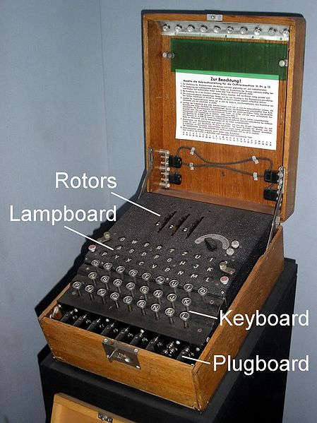
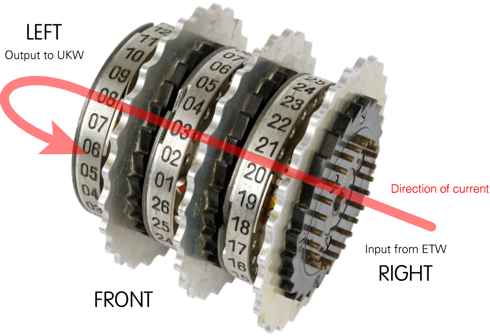
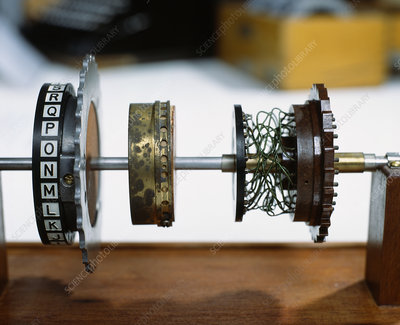
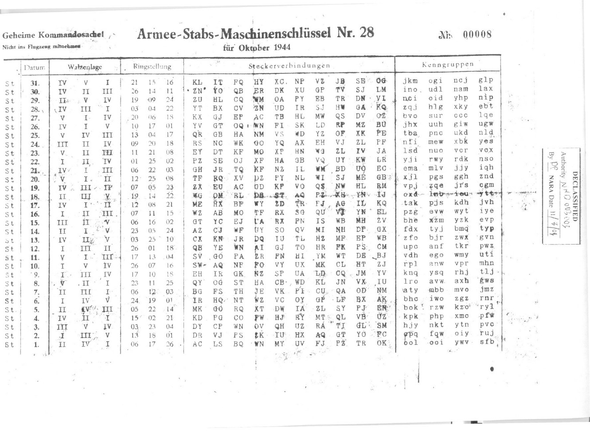
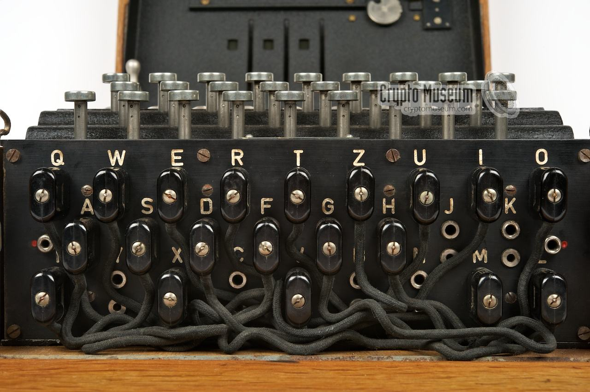
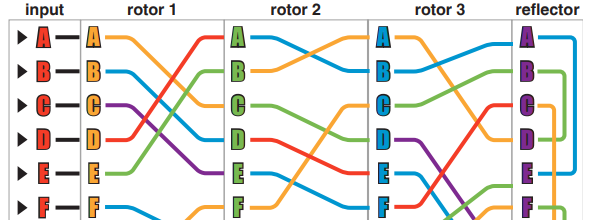
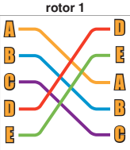
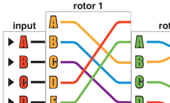
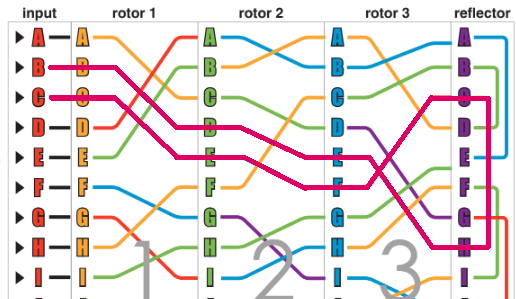

The Enigma Machine was a simple device to operate. As you push letters on the keyboard it scrambles the letter and it lights up a different letter on the Lampboard.
While deciphering the messages was challenging, the basic mechanics were relatively straightforward.
The key to scrambling was to pass a current through a series of rotors.

Each one has 26 connectors on each side. Passing current through one of the connectors causes the current to exit on a completely different connector on the other side.
This is accomplished by manually wiring each connector to a different one on the other side.

Each rotor is wired in a specific way to ensure that operators sending and receiving the message are getting the same scramble. The machine used a series of multiple rotors to create an unpredictable scramble.
Each time a letter was pressed, one or more of the rotors would rotate and completely change the scramble. This meant that pressing the same letter twice in a row would produce a different result, again adding a challenge to deciphering.
A single scramble would be easy to detect. The key to getting a different scramble was the number of settings that could be changed on the machine. Each day there was a different set of initial settings that the machine would be set to before encoding or decoding a message.

There were only a handful of rotors that would come with each Enigma Machine, each with a specific wiring. But the rotors were meant to be used in a series of 3 or 4 and they could be placed in any order, and with a different initial rotation. Each combination of rotors and initial rotations would provide a different scrambling of the letters.
You can see in the 'Walzenlage' column above the roman numberals of the rotors and which order they were. On the 31st, they were IV, V, and I.
Each rotor had 26 possible rotations. After entering the appropriate rotors, the operator would rotate each one to an initial position.
In the form above this is the 'Ringstellung' column. On the 31st the rotors would be rotated to notch 21, 15, and 16 before the first letter was encoded.
Another way of mixing up the scramble was to use the plugboard on the front of the machine.

The purpose of each plug would be to swap its input with a completely different letter before inputting it.
In the form above, this is the 'Steckerverbindungen' column, which lists ten pairs of letters that are to be swapped:
KL IT FQ HY XC NP VZ JB SE OG.
For this assignment we are going to be emulating the scrambling power of the Enigma Machine. Before we do, we are going to simplify it down to a simplified version that allows you to trace the scrambling of each rotor visually.

Open the Enigma Machine assignment in CodeHS. There you can read about the Simplified Enigma Machine and practice using it before coding it.
We are going to write a program that mimics the Paper Enigma Machine's rotors, with Strings! We first need to look at how they could be used.
Let's look at the first five connections of rotor 1:
Even though the end goal is to scramble letters, when we write our scrambling function we are going to want it to scramble from index to index. The top index will be index 0, and they will increase from there. With rotor 1 above, index 0 on the left scrambles to index 2 on the right, and index 4 scrambles to index 1.
We need a way to track which connections are being made from one side to the other. This is where the strings are going to get involved. You've already noticed that each index on the left side is labeled with a letter, laid out alphabetically. The letter at each index of the key string is made by tracing back to the left and seeing which letter is at that index.

For this shortened version of rotor 1, the key string would be: "DEABC".
The rotor's key string is all we need to know in order to perform a scramble. We just have to remember that the left side is the alphabet, and the key represents the right side:
left side: "ABCDE"
right side: "DEABC"
We can use these string to scramble indices. Look at our previous example of scrambling index 0:
- We start on the left, where we find A at index 0.
- We search the right (the key) for the same letter
- The index its found is our scrambled value: 2
Try to scramble index 4 using the strings to confirm that you know how it scrambles to index 1
You can also use the strings to scramble in the reverse direction, which we will have to do eventually. Let's scramble index 0 again, but this time from right to left.
- We start on the right, where we find D at index 0.
- We search the left (the alphabet) for the same letter
- The index its found is our scrambled value: 3
Open the Enigma Machine Workspace in CodeHS
There you will find a setup() function that's only calling setupTester( 1 ). There are five different phases that are each going to need different testing. As we progress, we will change the parameter here to get the correct tester setup.
Further down the sketch, you will also find the incomplete scrambleLtoR() function, which has two parameters: the rotorKey and the inputIndex. Our job is to also use the global alphabet variable to help us scramble the inputIndex variable starting with the 'left' and ending on the right. This means that the alphabet will represent the left side of the rotor and rotorKey will represent the right.
String Methods to Remember:
- String's charAt() function returns the letter at a given index
- String's indexOf() function searches for a string within another string and returns the index
Follow the steps outlined in the comments to scramble the inputIndex variable and return the result.
If you run your program, you'll see that calling setupTester(1) has created a testing window to help test your scrambleLtoR() function using Rotor#1.
Clicking a letter will show four values:
- The letter that you clicked.
- The index that matches it.
- The scrambled index that your function returned.
- The letter that it represents.
When you click the A, you should see:
The A currently aligns with index 0, which should scramble to 2 when using rotor 1. This aligns with the letter C.
If the scrambled index/letter are off, check your scrambleLtoR() again.
The complexity of the machine comes from the fact that all the rotors could turn, shifting all the connections. With the paper Enigma Machine, this is accomplished by sliding the rotor up one notch:

With this shift, the top index of the input no longer connects to index 0 of the rotor. Instead it connects one index higher in the left of the rotor, causing a different connection/scramble.
We can easily adjust our algorithm to accommodate for this
- Every index of the input connects to a location one index higher in the rotor than it used to
- The output index of each of the connections now connects one index lower than it used to
Modify the header of the scrambleLtoR() function to have an extra parameter named shift.
The added parameter indicates how much the rotor is shifted. This means that we have to modify our code in two places:
- Instead of using inputIndex directly to access the character in alphabet, we need to add shift to it first.
- Instead of returning the scrambled index directly, we need to subtract shift from it first.
Make these changes to your function.
Now the code in the setup() function is out of date. It was not testing the scrambleLtoR() function with a shift value. Modify the setup() function to setup the tester interface for phase 2:
function setup(){
setupTester( 2 );
}
Run the sketch. The basic functionality is the same. You click a button and it calls your scrambleLtoR() function using the key to rotor 1. This time it also adds a shift value of 1, so the scrambling will be according to the shifted image above.
Test the first four letters:
A should still encode to C
B should still encode to D
C should cause an error (More about that soon. Try to guess why by looking at the picture).
D should now encode to A
Encoding the letter C in this way is causing a problem. The output index ends up being -1 and causing a NaN to appear. If you trace it in the image below, you'll see that the shift is taking us off the page.
In reality, the wheel like nature of the rotors won't allow this to happen. When you tape these paper strips into a tube, above the A location in each rotor should be its own Z location. We need to program this 'wrap around' feature into our code so that we don't get errors in these situations.
The problem is that shifting may give us values that are either larger than 25, or less than 0. In those situations we need to adjust by adding or subtracting 26.
In our example where C maps to a -1, we would add 26 to get 25, the index of Z.
To fix this, modify shiftLeftToRight() to take an extra step in two places: after the input index is increased and after it's decreased. After each of these, use an if statement to check if the new value has gone out of range and add or subtract 26 to bring it back into range.
Run your program and scramble the letter C again. It should now scramble to a Z instead.

We've been scrambling from left to right so far, but that is only 3 of the 7 scrambles that we're hoping to do. We still need to be able to mimic two more pieces: the Reflector and the Reverse Scramble
After the signal passes through three rotors, it enters the Reflector, which has its input and output connections on the same side. This causes the signal to then be fed back through the rotors in the opposite direction.
We don't need a special function for this! We can still develop a Rotor Key for the reflector that will act properly if we use it with our scrambleLtoR() function.
REFLECTOR ROTOR KEY "EDHBAILCFMOGJSKRUPNWQZTZVX"
The way that the reflector is wired, the result will be the same if you scramble Left to Right or Right to Left.
After the signal passes through the Reflector, it travels backwards through the rotors in reverse order, scrambling again as it travels.
Add a new function to your sketch with the following header:
The difference this time is that the 'input' is on the right of the rotor, and the output is on the left. Meaning that you should first get the char from the rotorKey instead of alphabet. And when you are searching for the output index, you should be looking in alphabet instead of rotorKey.
This may be as simple as copy-pasting your other scramble function and changing it at two locations.
Now the code in the setup() function is out of date. It was not testing the scrambleRtoL() function. Modify the setup() function to setup the tester interface for phase 3:
function setup(){
setupTester( 3 );
}
Run the sketch. The difference this time is that it is specifically testing your new scrambleRtoL() function. The scrambling should be different than before.
A should scramble to D
E should scramble to C
Now that we have our scramble functions we can use them to simulate several rotors. Add the following variable as global variables to your sketch:
const rotor1Key = "DEABCHFIGKNJLPMSTOVQRWUYZX"; const rotor2Key = "BAFCDEHIGLMJKONRPQTUSXYZVW"; const rotor3Key = "BCFAGHDEJILKNOPMSTQRXYZUVW"; const reflectorKey = "EDHBAILCFMOGJSKRUPNWQYTZVX";
The word const stands for constant, which simply means a variable that you won't be allowed to change.
These are the rotor keys for the three rotors on the paper Enigma machine. When you want to call one of the scramble functions, we can now use one of these variables instead of using the entire string. For example, scrambling an A (index 0) using rotor 1 with no shift would look like this:
let scram1 = scrambleLtoR( rotor1Key, 0, 0); //Scrambles index 0 through rotor 1 with no shift. let scram2 = scrambleLtoR( rotor2Key, scram1, 0); //Feeds the output from rotor 1 output to the input of rotor 2
We now have a way to simulate scrambling through the rotors in both directions. This is important because we are now going to simulate a full scramble, which should scramble through three rotors, a reflector, and back through the rotors again.
Add a new function to your sketch with the following header:
The purpose of the encryptLetter() function is to take the parameter letter and encrypt it using the full Enigma process, returning the encrypted letter as a character.
This will require several steps
- Convert the input letter to an index
- Scramble LtoR through rotors 1, 2, and 3
- Scramble through the reflector
- Scramble RtoL through rotors 3,2, and 1
- Convert the scrambled index to a letter
- Return the letter
Converting Character to an Index: You can use char() and unchar() for this. Keep in mind that ASCII values are 65 away from where they should be. You may also use the alphabet constant to help you: indexOf() and charAt() would be helpful functions.
No Shift Yet: For now we are not shifting. The third parameter in each of your calls to a scramble function will be 0.
Going from One Rotor to the Next: Each time you call a scramble function it will return a value that is meant to be the input of the next. Each time you call a scramble function it will return an index, assign the result to a variable so that you may use it as a parameter in the next function call. Here's an example of scrambling an A (index 0) through rotor1 and feeding the result through rotor2
let scram1 = scrambleLtoR( rotor1Key, 0, 0); //Scrambles index 0 through rotor 1 with no shift. let scram2 = scrambleLtoR( rotor2Key, scram1, 0); //Feeds the output from rotor 1 output to the input of rotor 2
The full scramble will require seven different index scrambles before turning it back into a character and returning it.
Now the code in the setup() function is out of date. It was not testing the scrambleLtoR() function with a shift value. Modify the setup() function to setup the tester interface for phase 4:
function setup(){
setupTester( 4 );
}
This version will test your encryptLetter() function in the same way that it has tested all. The first thing that you should do is test the highlighted path above. You should click B and expect it to convert to C. If not, you may need go back and console.log() each scrambled index along the way:
Here is a list of all the indices that will shift when you try to scramble B. You can compare that to your
The letter B is represented as index 1
Rotor 1 scrambles index 1 to index 3
Rotor 2 scrambles index 3 to index 4
Rotor 3 scrambles index 4 to index 7
The Reflector scrambles index 7 to index 2
Rotor 3 scrambles index 2 to index 5
Rotor 2 scrambles index 5 to index 4
Rotor 1 scrambles index 4 to index 2
Index 2 is represented with a C
We now have a function with the ability to see what one letter will scramble to. We can now use it to process entire messages. Add a function with the following header to your sketch:
The encodeMessage() function's purpose is to loop through the parameter mess one character at a time. It should call the encryptLetter() function with each character in the String, and create and return a new String with the results.
Note: This is similar to a lot of recent loops
- Use a for loop with charAt() to access each character
- Call encryptLetter() with each character , adding the result to a String accumulator before moving to the next letter.
Now the code in the setup() function is out of date. It was not testing the scrambleLtoR() function with a shift value. Modify the setup() function to setup the tester interface for phase 5:
function setup(){
setupTester( 5 );
}
This version is very different. Instead of a single letter input and output, there is an input field for you to type a message. When you hit go, that message will be passed to your encryptMessage() function and display the result.
Test your function with the word: SACCO. It should encode to PLBBK
Though we're able to mimic travelling through all the rotors and the reflectors, at the moment we are still making an easily broken code. A will always encode to L, and that makes it easily cracked. For example: If you are a student of Mr. Sacco, you likely have seen his name used as sample data a thousand times. The fact that we have a five letter word with a double letter in the third and fourth location, should be a clue that the word may be SACCO.
The true randomness of the Enigma Machine came from the fact that you rotated a rotor once for each letter in the message. This causes all the connections to be completely different and cause an entirely new scramble to occur. Much more unpredictable
Modify your program to have three global variables representing the shift of each rotor:
let shift1 = 0; let shift2 = 0; let shift3 = 0;
These variables are meant to track the rotation/shift amount for each rotor. Modify your encryptLetter() function so that each call to a scrambling function now includes a shift variable that matches the rotor:
let scram2 = scrambleLtoR( rotor2Key, scram1, shift2);
This should be done six times. One for each rotor in each direction. The reflector has no rotation, so it should remain at 0.
The Enigma Machine was made so that pressing a key would:
1) Scramble the letter pressed
2) Rotate the rightmost rotor by 1 to set up for the next press
You can do this in your code. In the encryptMessage() funciton, modify the inside of your for loop so that after you havecall encrypt letter, you increment the shift3 variable by one. This will give the next letter a completely different scramble.
Run your program one more time. This time entering SACCO should result in the scrambled: PNWNY.
Notice that the double letter in the message no longer leads to a double letter in the encryption. Making it much more secure.